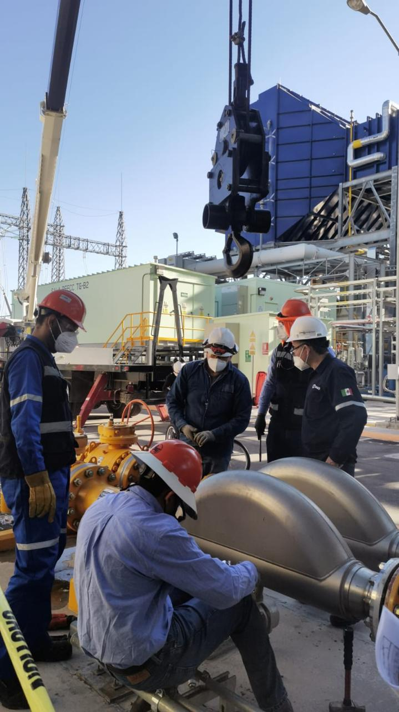
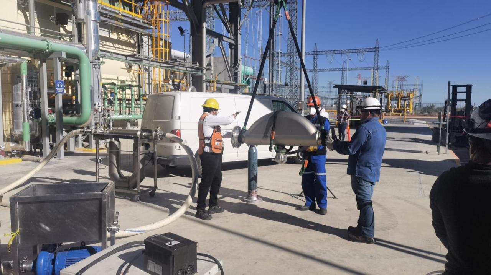

Calibración
Medición de flujo en sitio
Preparación, conexión, toma de datos y documentación de instrumentos de proceso.
Participamos en servicios de calibración, instrumentación e inspección en instalaciones industriales. Publicamos únicamente información autorizada para proteger la confidencialidad de cada cliente.
Mostramos tipos de actividades y evidencia visual de trabajo en campo, cuidando la confidencialidad de la información de cada cliente.
Preparación, conexión, toma de datos y documentación de instrumentos de proceso.

Apoyo técnico para instalación, configuración y pruebas funcionales.

Inspección documental y de campo dentro del alcance acreditado.
Te indicamos qué información necesitamos para revisar el alcance.